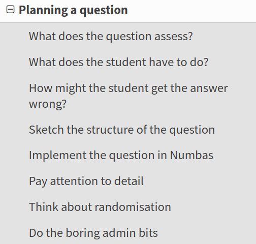

Numbas update
Christian Lawson-Perfect
Newcastle University
EAMS 2022
Plan for today
Numbas is capable of a lot more than I can show in an hour!
- Introduce Numbas and demo
- Find out what's wanted
- Explore the Numbas editor
- Q&A
Numbas is an open-source web-based e-assessment tool.
It is aimed at numerate disciplines.
Developed by the e-learning unit in Newcastle University's School of Mathematics, Statistics and Physics.
Key features
- Scalable, reliable and accessible to a broad range of users.
- Easy to use.
- Used by question authors who aren't experts.
- Feedback is important.
- Customisable everywhere.
- Delivered through VLE or standalone.
- Lots of maths features.
Applications of Numbas
At Newcastle, we use Numbas for:
- Formative use in a pre-entry course.
- Diagnostic tests in week 1.
- Banks of practice material to supplement lecture material.
- In-course assessment.
- Lab exercises.
- Final exams.
Subjects using Numbas
- Mathematics and statistics
- Physics
- Engineering
- Chemistry
- Business studies
- Psychology
- Biomedical science
- Sports science
- ... and more
Outside of Newcastle
- 1,500+ institutions in the UK and around the world.
- 8,000+ users registered on public editor.
- 9,500+ questions and exams released for free reuse under an open access licence.
(as of June 2022, as far as we can tell)
A quick demo
The mathcentre editor
- Open to everyone.
- Collect ready-made questions into a custom test
- Or write your own.
docs.numbas.org.uk

Planning a question

Use projects

Organise material into folders

Use editing history to leave editing comments and set checkpoints

Write good variable descriptions

Use the "random person" extension

Create printable exams with the "printed worksheet" theme

Extensions add functionality

Custom part types allow different kinds of interaction

Thanks!
Website: numbas.org.uk
Email: numbas@ncl.ac.uk
Twitter: @NclNumbas
Source code: github.com/numbas